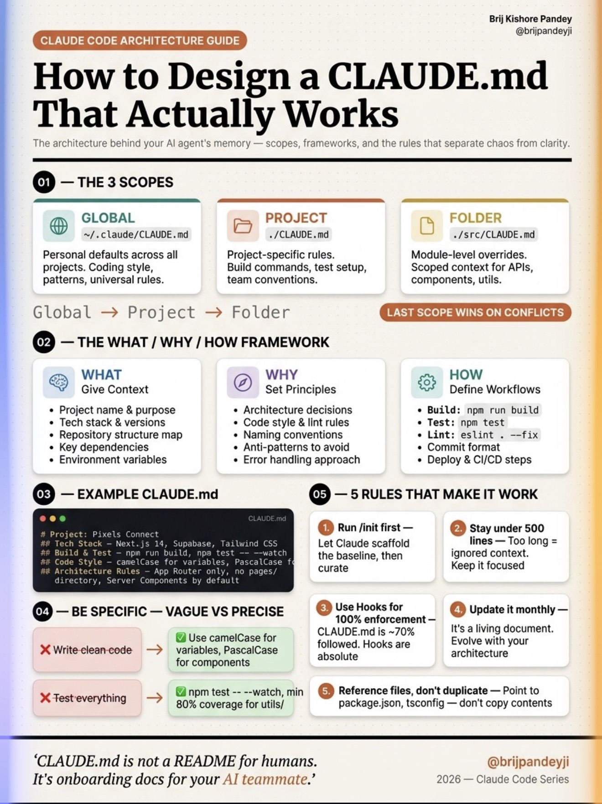

▸ How to Design a CLAUDE.md That Actually Works / Brij Pandey
RULE 01
/init 먼저
Claude 가 초기 스캐폴드 잡게 → 그 후 큐레이션
RULE 02
500줄 이하
너무 길면 Claude 가 무시. 우리 본판 = ~180줄
RULE 03
Hooks 강제
메모리·프롬프트는 7~80% 지킴. Hooks 는 100%
RULE 04
월간 갱신
살아있는 문서 — 아키텍처 변화 반영 필수
RULE 05
참조 중심
중복 금지. guide.txt · docs/architecture-patterns.md 가리키기만
3 SCOPES
Folder > Project > Global
충돌 시 가까운 게 이긴다. ./src/CLAUDE.md 우선